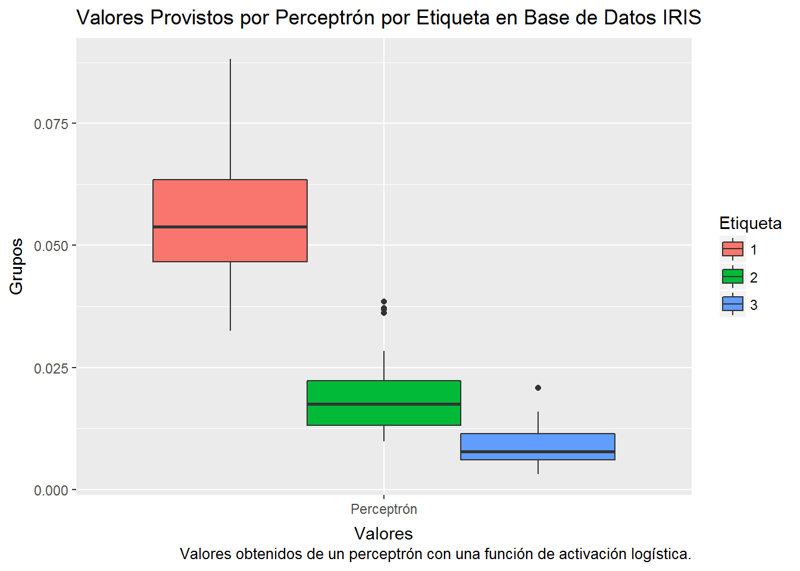
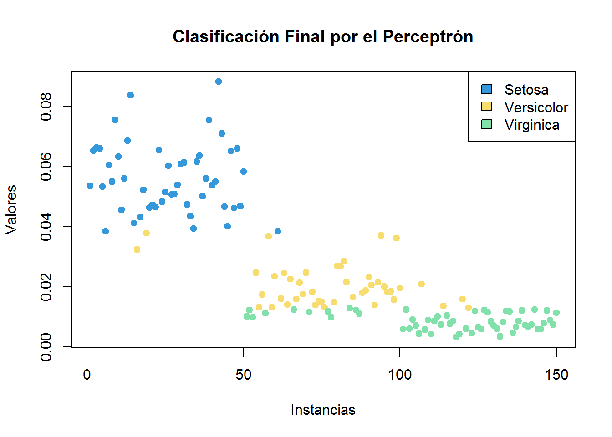

Capítulo 5 Programando un Perceptrón Por las Piedritas
En éste ejercicio estaré buscando prorgamar un perceptrón con una función de activación logística. La estructura básica del perceptrón será como se muestra en la siguiente figura:
La fórmula de la función de activación logística:
\[y = \frac{1}{1+e^{-\theta^{T} x}}\]
5.1 Base de datos para éste ejercicio
Estaré utilizando la base de datos Iris para éste ejercicio:
head(iris)## Sepal.Length Sepal.Width Petal.Length Petal.Width Species
## 1 5.1 3.5 1.4 0.2 setosa
## 2 4.9 3.0 1.4 0.2 setosa
## 3 4.7 3.2 1.3 0.2 setosa
## 4 4.6 3.1 1.5 0.2 setosa
## 5 5.0 3.6 1.4 0.2 setosa
## 6 5.4 3.9 1.7 0.4 setosaContiene 150 entradas con 4 features y 1 variable objetivo (especie de la planta).
5.2 Preparación de los datos para uso del perceptrón
5.2.1 Selección y preparacion de subconjunto de datos
library(pracma)
o <- matrix(c(0.25,0.32,0.30,0.28), ncol = 4, nrow = 1) #pesos expresados como una matriz de 1x4.
x <-as.matrix(iris[,1:4]) #Conviertiendo los datos de Iris a matriz y excluyendo la variable objetivo.
ot <- t(o)5.3 Implementación
start.time <- Sys.time()
fun <- function(o,x) {
y <- 1/(1+exp(x[,1:4] %*% t(o)))
time.taken <- Sys.time() - start.time
{cat("Proceso terminado en: ", time.taken, "milisegundos.")}
y
}5.4 Explorando resultados de \(h_{\theta}(x)\)
a <- fun(o,x) #ejecutando la función con los datos de Iris.## Proceso terminado en: 0.04801297 milisegundos.res <- as.data.frame(cbind(a,iris[,5])) #data.frame que contiene los valores resultado de la función de activación del perceptrón y el valor de la variable objetivo en la base de datos Iris.5.4.1 Resultados en tabla
colnames(res) <- c("Perceptrón", "Etiqueta")
head(res)## Perceptrón Etiqueta
## 1 0.05360590 1
## 2 0.06531426 1
## 3 0.06629785 1
## 4 0.06611239 1
## 5 0.05325188 1
## 6 0.03841999 15.4.2 Boxplots
library(reshape2)
library(ggplot2)
testMelt <- melt(res, id.var = "Etiqueta")
testMelt$Etiqueta <- as.factor(testMelt$Etiqueta)
g <- ggplot(testMelt,
aes(x = variable, y = value)) +
geom_boxplot(aes(fill = Etiqueta)) +
labs(title = "Valores Provistos por Perceptrón por Etiqueta en Base de Datos IRIS",
x = "Valores",
y = "Grupos",
caption = "Valores obtenidos de un perceptrón con una función de activación logística.")
g 
Derivado de éstas visualizaciones se decide tomar los siguientes valores como corte para la clasificación de los grupos:
- Etiqueta 1: \(\geq\) 0.38
- Etiqueta 2: <0.038 & >=0.014
- Etiqueta 3: \(\leq\) 0.013
5.4.3 Clasificación con parámetros calculados
Se realizará una clasificación de los resultados obtendios por el perceptrón en función a los valores indicados en el párrafo anterior, posteriormente éstos valores se asignarán a un vector clas que será agregado a la base de datos IRIS.
clas<-c()
for(k in 1:dim(a)[1]){
if(a[k,1]<=0.013)
clas[k]<-3
else if(a[k,1]>0.013 & a[k,1]<=0.038)
clas[k]<-2
else
clas[k]<-1
}
resTable<-cbind.data.frame(iris,perceptron=a[,1],clasPercept = clas)
perform <- mean(as.numeric(resTable$Species)==resTable$clas)
head(resTable)## Sepal.Length Sepal.Width Petal.Length Petal.Width Species perceptron
## 1 5.1 3.5 1.4 0.2 setosa 0.05360590
## 2 4.9 3.0 1.4 0.2 setosa 0.06531426
## 3 4.7 3.2 1.3 0.2 setosa 0.06629785
## 4 4.6 3.1 1.5 0.2 setosa 0.06611239
## 5 5.0 3.6 1.4 0.2 setosa 0.05325188
## 6 5.4 3.9 1.7 0.4 setosa 0.03841999
## clasPercept
## 1 1
## 2 1
## 3 1
## 4 1
## 5 1
## 6 15.4.4 Visualización de Clasificación
colors <- c("#3498DB", "#F7DC6F", "#82E0AA")
resTable$clasPercept <- as.factor(resTable$clasPercept)
plot(resTable$perceptron,
col = colors[resTable$clasPercept],
pch = 19,
xlab = "Instancias",
ylab = "Valores",
main = "Clasificación Final por el Perceptrón")
legend("topright",
legend = c("Setosa","Versicolor", "Virginica"),
fill = c("#3498DB", "#F7DC6F", "#82E0AA"))
Con los resultados obtenidos en ésta tabla podemos apreciar que el perceptrón tiene un porcentaje de acierto de 0.88.